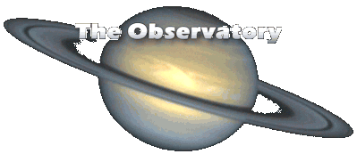
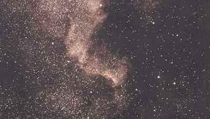
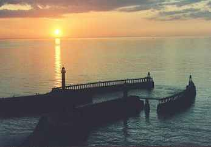
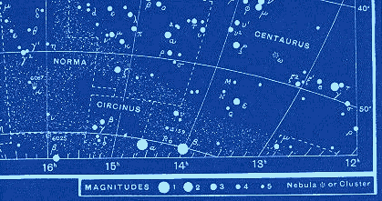
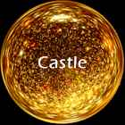
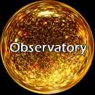

|

Introducing the Night Sky
As night falls, and the twilight in the West begins to fade, one by one, the stars begin to appear, and by the time the last vestige of daylight disappears, we are amazed by the infinite number of points of light aglow in the night sky. The stars range tremendously in brightness and distribution against the blackness. How remote they look, and indeed, how remote they really are! When we see the stars, not only are we looking deep into space, but we are looking back into time as well; a thought I hope we shall begin to appreciate a little later.

But what are these points of light we call stars? Each star is a sun; many are like our own sun in size and temperature, which is just right to support life on our planet. Other stars are many times larger than the sun, as we shall see when we begin our tour of the night sky. Some are very much smaller. The sun is a fairly average yellow-white star with a diameter of over 800 000 miles (1.25 million kilometers) It's temperature at the visible surface is just under 6000 deg C. At the centre of the sun, violent nuclear reactions are taking place. The nuclei of Hydrogen atoms are being converted into Helium at a rate of 4 million tons of its mass each second, and this is the source of the sun's light and heat. The temperature at the sun's core is thought to be in the order of 15 million deg C. The reactions taking place within the sun are due to the immense pressures acting on the gases at the sun's centre, caused by the great force of gravity existing there. The sun has shone for some 4500 million years, and despite the fact that it is losing mass very rapidly, 400 million tons each second, there is still a lot of sun left, and it will continue to shine for another 5000 million years at least. The sun is not going to run out of fuel in the forseeable future!

Incidentally, the sun is the only star it is wise NOT to look at directly, because of it nearness and dazzling brightness. If you were to stare directly at the sun, you would permanently damage your sight, and if you were foolish enough to look at the sun through binoculars or telescope, which not only magnify the sun's disc, but its heat and light as well, you would, without any doubt, blind yourself; so please don't try. The reason why the sun looks so different from the rest of the stars, and appears very much brighter, is because the sun is quite close to us; the other stars are very much further away. It may be a good idea now, to visualise a model to see where we are in relation to the stars in the universe. The sun lies at the centre of the Solar System - this is the name usually given to the sun and its nine known planets which revolve around it, together with their satellites or moons. These planets are, in order of distance from the sun, Mercury, Venus, Earth then Mars, Jupiter, Saturn, Uranus, Neptune and Pluto, although Pluto occasionally lies nearer to the sun than Neptune. This has happened during the last couple of decades of the twentieth century. The earth is therefore the third planet in order of distance from the sun, lying on average 93 million miles (149 million km) from it. On its journey about the sun, the earth is accompanied by its satellite the moon, just a quarter of a million miles (400 000 km) away.
 Diagram of The Solar System, (not to scale) Let's suppose that we could shrink the earth to 60 million times smaller than it is. We would end up with a small globe 8 inches (20cm) in diameter, about the size of a football. On this scale, to represent the moon, we would place an object just a little larger than a billiard ball, 7 yards (7.5 metres) away. To represent the sun, we would have to place a much larger globe of 75 ft (over 27 metres) in diameter, at a distance of 1.5 miles (2.5 km) away. On this scale, the very nearest of the stars, other than the sun of course, would be over 400 000 miles (643 000 km) away, over 1.5 times the moon's real distance from earth ! Another way of looking at our place in the universe is to imagine taking a trip on a star ship such as the "USS Enterprise", of "Star Trek" fame. If we could travel at Warp Factor '1', that's the speed of light, a distance of 186 000 miles (300 000 km), each second, we could do seven complete circuits of the earth in one second. Travelling at the same speed, we would reach the moon in 1.24 seconds, and the sun in just under 9 minutes. We would be able to reach the outer planets of the Solar System within 4 hours, but to reach the nearest star, we would have to spend 4.3 years travelling through space at the same speed, remember, which takes us 7 times round the earth in one second! The distance to the stars is very great indeed, and the speed of light is used by astronomers as a more convenient measurement than miles or kilometers. One light year is the distance covered by a ray of light in one year, and that is a distance of 6 million million miles (9.5 million million km), so the distance to the nearest of the stars is over 25 million million miles (40 million million km). It's far easier to say 4.3 light years, I'm sure you will agree!
Let's return now to the stars we can see in the night sky after the light of our nearest star, the sun, has faded. I mentioned at the beginning that the stars differ in brightness. This is partially due to the different distances of the individual stars from earth, but it is also due to the different sizes of the stars as well. Astronomers have a special way of classifying stars according to how bright or how dim they appear to be - this is called Magnitude. The magnitude of a star is a measure of its brightness. The brightest stars in the sky are of magnitude 1; the faintest ones visible with the naked eye are of magnitude 6. Stars of the first magnitude are 2.5 times brighter than stars of magnitude 2, which in turn are 2.5 times brighter than magnitude 3 and so on down the scale. A sixth magnitude star is about 100 times fainter than a star of magnitude 1. The faintest stars seen through the world's largest telescopes, including the Hubble Space Telescope, are beyond magnitude 25, and so are thousands of times fainter than the faintest star we can see with the unaided eye. Certain stars are brighter than magnitude 1, and are therefore given the value zero. Some objects are brighter still. These are given a minus magnitude designation which increases in numerical value the brighter the object is. So, for example, the sun is the brightest object in the sky at magnitude -26. The full moon is -12.5, Venus, the brightest of all the planets can shine at magnitude -4.5, and Jupiter can be as bright as -2.5. The brightest of all the true stars in the night sky is Sirius, at -1.5, and Arcturus, the brightest star in the Northern sky is of magnitude zero.
 Magnitude is a measure of a star's relative brightness.
On to Part 2 >> Written by John Harper for Diarmid's Observatory
|
|
|
 |
 |